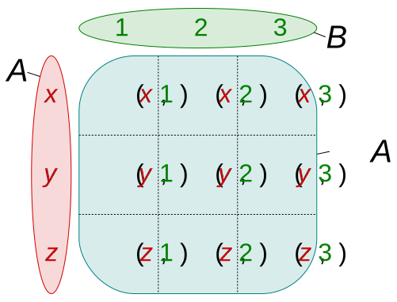

Immutability & Pure Functions
Malte Neuss
Reasoning about code
prices = [5, 2, 7]
# assert prices[0] == 5
minPrice = minimum(prices)
# assert minPrice == 2
# assert prices[0] == 5 # Correct?
def minimum(values)
values.sort() # surprise
return values[0]
Content
- Immutability
- Pure Functions
- Reasoning
- Referential transparency
- OO vs FP
Less surprises, better reasoning about correctness
Immutability
No mutation:
def minimum(values)
# values.sort() # mutation
other = sorted(values) # no mutation
return other[0]
No reassign:
value = 1 # Assign
# value = 2 # Reassign
other = 2
Reasoning
def minimum(values)
# values.sort() # surprise
sorted = sort(values) # no surprise
return sorted[0]
prices = [5, 2, 7] # If immutable
minPrice = minimum(prices)
assert prices[0] == 5 # Guaranteed
Type Checker Support
Automation > Discipline
Immutable built-in classes
Immutable interface:
mySet = frozenset([1, 2, 3]) # Python
mySet.add(4) # type error
Copy on change:
val myList = immutable.List(1, 2, 3) # Scala
val other = myList.appended(4) # new list
Immutable custom classes
Immutable interface around mutable data:
class MyClass:
_value: int # hide mutables
def getValue() # no setters
return _value
def calcSth() # _value read only
return _value*2
def incremented() # Copy on change
return MyClass(_value+1)
Immutable custom classes
With extra language support:
@dataclass(frozen=True) # Python
class MyClass:
value: int
object = MyClass(1)
object.value = 2 # compile error!
interface MyInterface { # Typescript
readonly value: int;
}
Immutable variables
Mutable:
var value = 1 # Typescript
value = 2 # ok
Immutable:
const value = 1 # Typescript
value = 2 # type error!
Pure Functions
\begin{align*}
f\colon \mathbb{R} &\to \mathbb{R} \qquad &\text{Type} \\
f(x) &= x + \pi \qquad &\text{Body}
\end{align*}
def f(x: float) -> float: # Type
return x + math.pi # Body
- Same input, same output
- No side-effects
- No (observable) mutation
- No I/O, network, exceptions etc.
- External constants ok
Side-Effect: Global Mutation
counter = 0 # Global variable
def add_pi(x)
counter += 1 # Mutation
return x + math.pi
# assert counter == 0
y = add_pi(9) # Hidden mutation
# assert counter == 0 # No
Side-Effect: Class Mutation
class MyClass
counter = 0 # Class variable
def add_pi(x)
this.counter += 1 # Mutation
return x + math.pi
object = MyClass(0)
# assert object.counter == 0
y = object.add_pi(9) # Hidden mutation
# assert object.counter == 0 # No
Referential transparency
class MyClass
state: int
def
Basic Types
type Void: // 0
type Unit: unit // 1
type Bool: true, false // 2
...
type String: "", "a", "b" ... // infty
Product Type
type ProductType = Type x Type
type User = Bool x String
class User
verified: Bool
email: String
Product Type
Type:
type User = Bool x String
Values:
User(true, "no@reply.com")
User(false, "no@reply.com")
User(true, "ok@reply.com")
User(false, "ok@reply.com")
...

By Quartl - Own work, CC BY-SA 3.0,
https://commons.wikimedia.org/w/index.php?curid=22436861
Algebra
Bool x Bool: (true,true) (false,false) (true,false) (false,true)
2 x 2 = 4
Bool x Unit: (true,unit) (false,unit) ~ Boolean
2 x 1 = 2
Bool x Void: (true,???) ~ Void
2 x 0 = 0
Sum Type
type SumType = Type + Type
type ID = Int | String Typescript
ID = Union[int, str] Python
sealed trait ID Scala
case class IntID(Int) extends ID
case class StringID(String) extends ID
Sum Type
Type:
Values:
myID: ID = 1 ✓
myID: ID = "123e4567-e89b..." ✓
...

By Stephan Kulla (User:Stephan Kulla)
- Own work, CC BY 3.0,
https://commons.wikimedia.org/w/index.php?curid=14978640
Algebra
Bool | Unit: true, false, unit
2 + 1 = 3
Bool | Void: true, false ~ Bool
2 + 0 = 2 2
Bool | Int: true, false, 1, 2, 3, ...
2 + 2^64
Unit Type
type BoolOpt = Bool | Unit
type Optional[T] = T | Unit
type Optional[T] = T | undefined Typescript
Optional[T] = Union[T, NoneType] Python
sealed trait Option[A] Scala
case class Some[A] extends Option[A]
case object None extends Option[A]
Examples
Modelling Data
Make illegal state unrepresentable
No ADT: Error codes
class UserResult:
error_code: int # 0 means ok
user: User # contains dummy data on error
def fetchUser() -> UserResult:
# network call
myUser = fetchUser()
if myUser.error_code == 0:
# do sth.
# what if myUser.user still has dummy data?
else
# do fallback
No ADT: Error codes
class UserResult:
error_code: int # 0 means ok
user: User # contains dummy data on error
Representable valid values:
UserResult(0, User("John"))
UserResult(0, User("Jane"))
UserResult(1, User("dummy"))
...
Representable invalid values:
UserResult(1, User("John"))
UserResult(0, User("dummy"))
No ADT: Exceptions
def fetchUser() -> User:
# raise Exception on error
myUser = fetchUser()
# do sth.
try:
myUser = fetchUser()
# do sth.
except ...
ADT: Optional
type Optional[T] = NoneType | T
def fetchUser() -> Optional[User]:
# return None on error
myUser = fetchUser()
if isinstance(myUser, User):
# do sth.
elif isinstance(myUser, NoneType):
# do fallback
ADT: Either
type Either[E,T] = E | T
def fetchUser() -> Either[Error, User]:
# return Error value on error
myUser = fetchUser()
if isinstance(myUser, User):
# do sth.
elif isinstance(myUser, Error):
# analyze reason
ADT: Custom
type User = Anonymous | LoggedIn
def fetchUser() -> User:
myUser = fetchUser()
if isinstance(myUser, Anonymous):
# do anonymous stuff.
elif isinstance(myUser, LoggedIn):
# do logged-in stuff.
ADT: Custom extended
type User = Anonymous | LoggedIn | Admin
# !new!
def fetchUser() -> User:
myUser = fetchUser()
if isinstance(myUser, Anonymous):
# do anonymous stuff.
elif isinstance(myUser, LoggedIn):
# do logged-in stuff.
!!! Compiler error: forgot Admin case !!!
Further Topics
- Scala
- Haskell
- Rust
- Dependent Types
- Linear Types
Category Theory

- Functor (map)
- Monad (flatMap)
- …